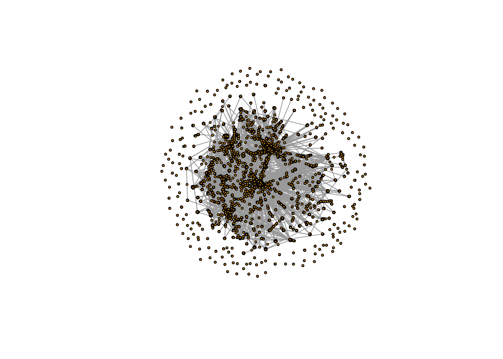
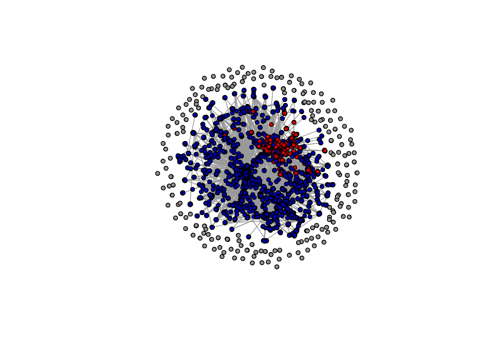

#if not already install, first run:
if (!require("dplyr")) install.packages("dplyr")
if (!require("ggplot2")) install.packages("ggplot2")
library(dplyr)
library(ggplot2)Worksheet 1: Web tracking and networks
Browser tracking
This is a walk through example that explores how to use web-tracking data.
We’ll also be using some of the skills you’ve learned from R4DS so far, namely:
- Curating data with e.g.
filterandselectfunctions in thedplyrpackage - Visualizing with the
ggplot2package
Let’s first install and load these packages. The below code first checks if the package is installed. If it’s not installed it then installs it. By using the function library followed by the name of the package in parentheses, we load these packages into memory so we can use them:
We are going to use some data that I collected using the “Web Historian” Chrome Extension that you’ll be able to add to your own Chrome Browsers by following the steps here.

By clicking on the image above, you’ll be taken to the Web Historian homepage. Click through to the “install from the Chrome Store” link to add to your own browsers.

As long as you have Chrome installed, you’ll then be able to install this browser extension on your own computers.
Once you’ve spent some time using the extension, you’ll have a good amount of data on your browsing habits stored. We can then read in these data, which by default are output as a JSON file. We read this in using the jsonlite package. Remember to first install the package if you don’t already have it installed:
#if not already installed, first run:
if (!require("jsonlite")) install.packages("jsonlite")
library(jsonlite)
wbdata <- jsonlite::fromJSON("data/web_historian_data.json")If you’re downloading these data locally onto your computers, you can use the following link to do so:
wbdata <- jsonlite::fromJSON(gzcon(url("https://github.com/cjbarrie/CS-ED/blob/main/data/web_historian_data.json?raw=true")))What do these data look like? We can take a look below:
Attaching package: 'kableExtra'The following object is masked from 'package:dplyr':
group_rows| domain | searchTerms | urlId |
|---|---|---|
| google.com | 43 | |
| google.com | jess philips politics uk twitter | 1726 |
| google.com | jess philips politics uk twitter | 1726 |
| google.com | chris bryant politics uk twitter | 1727 |
| google.com | chris bryant politics uk twitter | 1727 |
The data contain more columns than this, but we’ll focus on these three columns for now. How do we select just these three columns and thereby reduce the size of our dataset? To do so, we just need to use the select function in the dplyr package:
wbdata_short <- wbdata %>%
select(domain, searchTerms, urlId)What’s the most popular website in my browsing behaviour? To find out, we’ll have to count how many times I’ve accessed a particular domain. This is pretty straightforward. We first group_by the domain of interest and then we use the count function to tally up the number of visits per domain:
wbdata %>%
group_by(domain) %>%
count() # A tibble: 27 × 2
# Groups: domain [27]
domain n
<chr> <int>
1 Acrobat-for-Chrome.pdf Extension 2
2 Adobe Acrobat Options Extension 2
3 adobe.com 3
4 amazon.co.uk 6
5 apple.com 6
6 atgtickets.com 6
7 atypon.com 2
8 bbc.co.uk 2
9 chrome.com 1
10 chrome.google.com 9
# … with 17 more rowsAt the moment, this is sorted alphabetically, which isn’t very intuitive. Let’s instead tell R to display in descending order the number of visits to each domain with the arrange function:
wbdata %>%
group_by(domain) %>%
count() %>%
arrange(desc(n))# A tibble: 27 × 2
# Groups: domain [27]
domain n
<chr> <int>
1 google.com 61
2 diversitytravel.com 24
3 qualtrics.com 11
4 chrome.google.com 9
5 stackoverflow.com 9
6 uchicago.edu 9
7 youtube.com 9
8 amazon.co.uk 6
9 apple.com 6
10 atgtickets.com 6
# … with 17 more rowsWe can see clearly that I favour Google as a search engine… and that I’ve been doing some travel booking recently, as well as using the survey platform Qualtrics.
We can then gather together the most popular domains and save them in a separate data.frame object I’m calling wbdata_mp.
wbdata_mp <- wbdata %>%
group_by(domain) %>%
count() %>%
filter(n >5)And once we have this, it’s pretty easy for us to start plotting the data like so:
wbdata_mp %>%
ggplot() +
geom_bar(aes(domain, n), stat = "identity") +
coord_flip()
Questions
- Count the types of things I’m doing online (column “transType” in the
wbdata). What is my most frequent type of interaction with the web? - Change the colour of the bars in the bar graph.
Analyzing network data
This section is adapted in part from the exercise written by Tod Van Gunten for SICSS 22 here.
library(igraph)
library(tidygraph)
library(dplyr)
library(RColorBrewer)
library(classInt)
conov_net <- read_graph("data/replication/icwsm_polarization/all.graphml", format = "graphml")
nodes <- read.table("data/replication/icwsm_polarization/all.nodes.txt")
edges <- read.table("data/replication/icwsm_polarization/all.edgelist.txt")
nodes %>%
head(5) %>%
kbl() %>%
kable_styling(c("striped", "hover", "condensed", "responsive"))| V1 | V2 |
|---|---|
| 0 | right |
| 1 | right |
| 2 | left |
| 3 | left |
| 4 | - |
edges %>%
head(5) %>%
kbl() %>%
kable_styling(c("striped", "hover", "condensed", "responsive"))| V1 | V2 | V3 | V4 | V5 |
|---|---|---|---|---|
| 4522 | 617 | retweet | 1 | 1285399493 |
| 13126 | 12049 | retweet | 0 | 1287197840 |
| 11956 | 13524 | retweet | 0 | 1288106297 |
| 12875 | 3983 | retweet | 1 | 1284533918 |
| 10701 | 13172 | reply | 1 | 1286226286 |
Here we can see in the first table what we refer to in the networks world as “nodes” and in the second what we call “edges.”
You can download these data on your machines with:
nodes <- read.table(url("https://github.com/cjbarrie/CS-ED/blob/main/data/all.nodes.txt?raw=true"))
edges <- read.table(url("https://github.com/cjbarrie/CS-ED/blob/main/data/all.edgelist.txt?raw=true"))A node is the name for any individual entity in our networks (so here: a Twitter account) along with its “left-right” political leaning label.
The edges record the links between one account and another account. These might be “retweets” or they might be “mentions.” And we can visualize these separately.
For each of the nodes and edges, the numbers refer to the individual unique ID of the node and the unique ID of the edge. So, in the first row: 4522 and 617 refer to the IDs of a “tie” or link between one node and another node—and this is what we refer to as an “edge.”
library(tidylog)
colnames(nodes) <- c("node1", "lr")
colnames(edges) <- c("node1", "node2", "type", "n", "id")
rt_samp <- edges %>%
left_join(nodes, by = "node1") %>%
filter(type == "retweet")Note here we’re loading a new package tidylog, which is helpful because it outputs information on the success or failure of any data joins we’re doing—and tells us what any filter has done to our data. It’s good practice to have this loaded when you’re wrangling data as it helps avoid mistakes.
Here, we have first renamed our columns to something more intuitive: i.e., “node1” to refer to the nodes from which any tie is formed (because they retweet or mention another account) and “lr” to refer to the left-right orientation of the account that is doing the retweeting or mentioning.
For the edges data, we have done the same, but we also have columns for the node to which one node is making a connection by either retweeting or mentioning. Here, I’m referring to these accounts as “node2” because this is the node with which the edge is formed.
We then also have a column in the edges data for “type” and this refers to whether the edge between two nodes is a retweet or a mention. Finally, we have the “n” (or count) of retweets or mentions between two nodes, and a unique identifier or “id”.
rt_samp$node1 <- as.character(rt_samp$node1)
rt_samp$node2 <- as.character(rt_samp$node2)
igraph_rt_samp <- graph_from_edgelist(
as.matrix(rt_samp[,c("node1","node2")]),
directed = T
)
plot(simplify(igraph_rt_samp),
vertex.label = NA,
vertex.size = 2,
edge.arrow.size = 0)
In the above, we have then converted the “class” of the $node1 and $node2 objects to the character class so we can properly reformat them into the matrix type class required to make an igraph object, which is the class of object we need in order to use the igraph package.
Once we have made our igraph object, which here we’re calling igraph_rt_samp since this is an igraph object containing a sample of retweets, we are ready to plot.
Here, we are simply plotting the network, and specifying a few styling options, which change the size of the vertices (another name for nodes) and remove the default arrows that appear on these plots (as they just clutter the visualization).
samp_attr <- data.frame(
node = V(igraph_rt_samp)$name,
node.seq = 1:length(V(igraph_rt_samp)$name)
# ,
# degree.in = degree(igraph_rt_samp, mode = "in"), #unhash this to also estimate indegree
# between.dir = betweenness(igraph_rt_samp, directed = T,normalized = T), #unhash this to also estimate betweenness
# between.undir = betweenness(igraph_rt_samp, directed = F, normalized = T) #unhash this to also estimate betweenness (undirected)
)
nodes$node <- as.character(nodes$node)
nodes <- nodes %>%
mutate(lrcolor = recode(lr,
"right" = "#DE0100",
"left" = "#0015BC",
"-" = "#a6a49f")
)mutate: new variable 'lrcolor' (character) with 3 unique values and 0% NAsamp_attr_lr <- samp_attr %>%
left_join(nodes, by = "node")left_join: added 3 columns (node1, lr, lrcolor) > rows only in x 0 > rows only in y ( 3,471) > matched rows 18,934 > ======== > rows total 18,934plot(simplify(igraph_rt_samp),
vertex.label = NA,
vertex.size = 4,
vertex.color = samp_attr_lr$lrcolor,
edge.arrow.size = 0)
Notice, however, that the above plot doesn’t display any information on the left-right orientation of the nodes (or accounts). To do this, we need to add in information on the ideological orientation of users. We can do this by using the mutate and recode functions in the tidyverse.
First we create an object that just orders all our nodes into one data.frame object. Note you can unhash some of these rows to also get some additional statistics such as betweenness and indegree.
We choose hex colors based on the standard colors for the “Democrat” and “Republican” parties in the US: i.e., red for Republicans and blue for Democrats.
We then add this into our samp_attr_lr object where we have recorded the attributes of each of our edges.
Now we can plot: and we see that we already have a network visualization that looks similar to that in Figure 1 of the Conover et al. (2011) article.
Questions
- Count how many “left” nodes there are and how many “right” nodes there are.
- Add arrows to the network plot and increase their width (hint: see here)